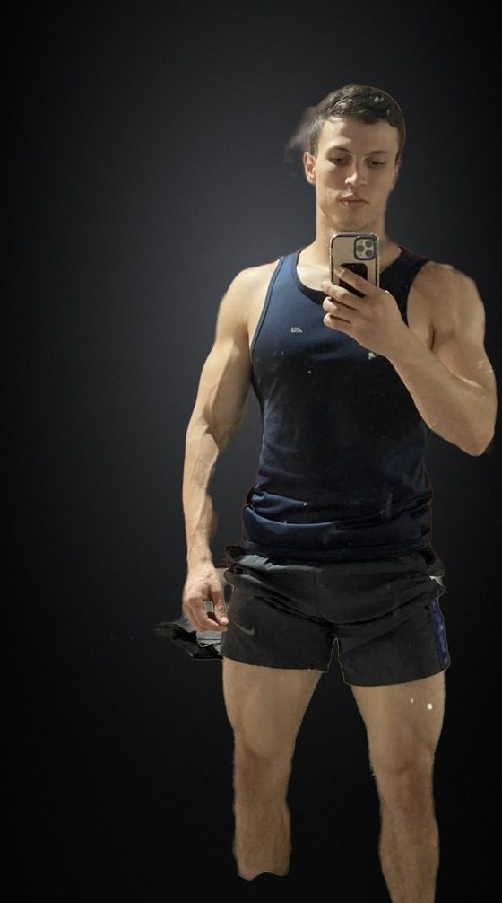

O que tem dentro
Guia digital completo

🥤20 receitas de hipercalórico natural
⚖️Medidas e modo de preparo de cada uma
🌾Ingredientes naturais, sem aditivos químicos
📱Leia no celular, tablet ou computador
As receitas que eu preparo na minha cozinha — ingredientes de mercado, sem conservantes, prontas em minutos com água ou leite.

Fotos do autor, registro da experiência pessoal. Cada corpo é diferente e os resultados podem variar.
Você come o dia inteiro e a balança não sai do lugar.
Toda festa de família alguém solta: "nossa, você tá magrinho".
A camiseta fica sobrando e você evita foto de corpo inteiro.
O pote de hipercalórico é caro e cheio de coisa que você nem sabe o que é.
Dá para resolver na sua cozinha, com o que tem no mercado.
Você tem 7 dias para conhecer o conteúdo. Se achar que não é para você, pede o reembolso pela Hotmart e recebe 100% de volta. Preto no branco.
Faixa-preta de judô, com mais de 10 anos de treino em alta intensidade. Essas combinações eu uso no dia a dia — para manter o peso com o gasto alto dos treinos e nas fases em que busquei ganhar peso e massa.
Eu sei (e você também sabe): a opção 2 é a mais inteligente.
Sim, são ingredientes naturais de supermercado.
Não. É a minha experiência pessoal com as receitas. Para um plano individual, consulte um nutricionista.
Para sempre. O pagamento é único e o acesso é vitalício, sem mensalidade.
Chama no WhatsApp: (61) 99184-0814. A resposta chega na hora.